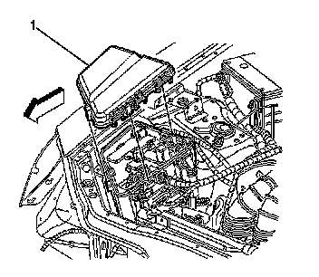
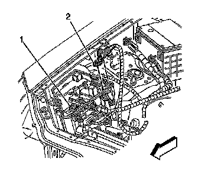
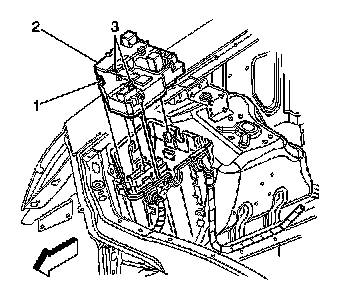
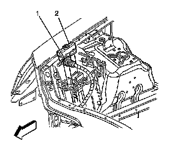
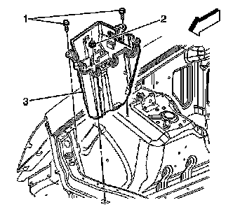

Fuse Block: Service and Repair
Underhood Electrical Center or Junction Block Replacement
Removal Procedure
1. Disconnect the negative battery cable. Refer to Battery Negative Cable Disconnection and Connection (LHD) (Service and Repair)Battery Negative Cable Disconnection and Connection (RHD) (Service and Repair) .

2. Remove the electrical center cover (1).

3. Remove the fastener securing the negative cable (2) to the electrical center.
4. Disconnect the electrical connector (1).

5. Remove the fasteners (3) securing the electrical center board (2).
6. Unlock the tabs (1) on the electrical center board.
7. Lift up on the electrical center board.

8. Pull upward on the harness at the locking tabs (1) in order to remove.

9. Remove the fasteners (1, 2) securing the electrical center (3) to vehicle.
Installation Procedure
Notice: Refer to Fastener Notice .
1. Install fasteners (1, 2) securing the electrical center (3) to vehicle.
Tighten the fasteners to 10 N.m (86 lb in).
2. Install the harness at the locking tabs (1).
3. Install the fasteners (3) securing the electrical center board (2).
Tighten the fasteners to 7 N.m (62 lb in).
4. Install the fastener securing the negative cable (2) to the electrical center.
Tighten the fasteners to 15 N.m (11 lb ft).
5. Install the electrical center cover (1).
6. Connect the negative battery cable. Refer to Battery Negative Cable Disconnection and Connection (LHD) (Service and Repair)Battery Negative Cable Disconnection and Connection (RHD) (Service and Repair) .